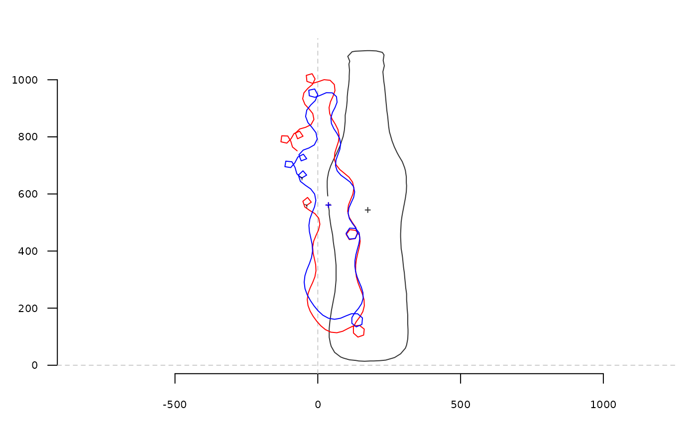

tfourier computes tangent angle Fourier analysis from a matrix or a
list of coordinates.
Usage
tfourier(x, ...)
# S3 method for default
tfourier(x, nb.h, smooth.it = 0, norm = FALSE, ...)
# S3 method for Out
tfourier(x, nb.h = 40, smooth.it = 0, norm = TRUE, ...)
# S3 method for list
tfourier(x, ...)Arguments
- x
A list or matrix of coordinates or an
Out- ...
useless here
- nb.h
integer. The number of harmonics to use. If missing, 12 is used on shapes; 99 percent of harmonic power on Out objects, both with messages.- smooth.it
integer. The number of smoothing iterations to perform- norm
logical. Whether to scale and register new coordinates so that the first point used is sent on the origin.
Value
A list with the following components:
aoao harmonic coefficientanvector of \(a_{1->n}\) harmonic coefficientsbnvector of \(b_{1->n}\) harmonic coefficientsphivector of variation of the tangent angletvector of distance along the perimeter expressed in radiansperimeternumeric. The perimeter of the outlinethetaonumeric. The first tangent anglex1The x-coordinate of the first pointy1The y-coordinate of the first point.
Note
Silent message and progress bars (if any) with options("verbose"=FALSE).
Directly borrowed for Claude (2008), and called fourier2 there.
References
Zahn CT, Roskies RZ. 1972. Fourier Descriptors for Plane Closed Curves. IEEE Transactions on Computers C-21: 269-281.
Claude, J. (2008) Morphometrics with R, Use R! series, Springer 316 pp.
See also
Other tfourier:
tfourier_i(),
tfourier_shape()
Examples
coo <- bot[1]
coo_plot(coo)
tf <- tfourier(coo, 12)
tf
#> $ao
#> [1] 7.733739
#>
#> $an
#> [1] 0.04522478 -0.37556233 0.02768553 0.94117330 -0.39901487 -0.77638246
#> [7] -0.57686667 0.04409017 -0.76045376 -0.46366388 -0.60869408 -0.14084193
#>
#> $bn
#> [1] 0.008457058 2.526564125 -0.554083930 0.313312077 -0.288987146
#> [6] 0.032821965 -0.226300468 0.409651090 -0.021830547 0.015586993
#> [11] 0.414880500 0.677636372
#>
#> $phi
#> [1] 0.00000000 0.03394792 6.12970584 6.22607257 6.18054224 6.19051042
#> [7] 6.13580603 5.99700591 5.99842093 5.99084704 5.86041492 5.81488459
#> [13] 5.76506244 5.62887223 5.58334190 5.53781157 5.39732954 5.35179921
#> [19] 5.22136709 5.16746875 5.12193843 5.06723404 5.07720222 5.03804123
#> [25] 5.03308691 5.08250829 5.03697796 5.17966914 5.21216935 5.41953309
#> [31] 5.77457625 5.99961627 6.05629266 6.19411028 6.06367816 6.15041823
#> [37] 6.20005411 6.10694068 6.10899345 6.11083173 6.24864935 6.21627616
#> [43] 0.15041122 0.41687566 0.72706839 0.84208756 0.93719564 0.93924841
#> [49] 0.94130119 0.84818776 0.80265743 0.85207881 0.75917987 0.75672633
#> [55] 0.62053611 0.71690284 0.62442716 0.58361378 0.52907469 0.53478153
#> [61] 0.44702280 0.39677552 0.39819054 0.39061666 0.21281593 0.16728561
#> [67] 0.07417217 6.26424405 6.21871372 6.07886944 5.99538267 5.94148434
#> [73] 5.89595401 5.85879168 5.85121780 5.90000142 6.00172285 5.85652387
#> [79] 5.95289060 6.03171526 6.08391184 6.21482206 6.12821895 6.02776111
#> [85] 5.90179053 5.77058090 5.73820771 5.54311764 5.45064197 5.40081982
#> [91] 5.40652666 5.31405098 5.27323760 5.21869850 5.17746000 5.13664661
#> [97] 5.13334469 5.04086901 4.99104686 4.62111347 5.01682255 4.60719411
#> [103] 5.30626827 6.00978848 6.15257805 6.15247100 6.15452378 6.10899345
#> [109] 6.19573352 0.50480943 1.60303743 0.87544326 1.21632143 1.02825629
#> [115] 1.03030907 0.88982703 0.79735136 0.79876638 0.84818776 0.70770572
#> [121] 0.61523005 0.51420121 0.66606644 0.52558441 0.48434590 0.34125395
#> [127] 0.16219458 0.14695801 6.24944229 6.18612024 6.12136151 6.11662487
#> [133] 6.17219791 6.26019663 0.02904262 0.07417217 0.07622495 0.08278017
#>
#> $t
#> [1] 0.00000000 0.04553033 0.09106066 0.13659098 0.18212131 0.22765164
#> [7] 0.27318197 0.31871230 0.36424263 0.40977295 0.45530328 0.50083361
#> [13] 0.54636394 0.59189427 0.63742460 0.68295492 0.72848525 0.77401558
#> [19] 0.81954591 0.86507624 0.91060657 0.95613689 1.00166722 1.04719755
#> [25] 1.09272788 1.13825821 1.18378854 1.22931886 1.27484919 1.32037952
#> [31] 1.36590985 1.41144018 1.45697051 1.50250083 1.54803116 1.59356149
#> [37] 1.63909182 1.68462215 1.73015248 1.77568280 1.82121313 1.86674346
#> [43] 1.91227379 1.95780412 2.00333445 2.04886477 2.09439510 2.13992543
#> [49] 2.18545576 2.23098609 2.27651642 2.32204674 2.36757707 2.41310740
#> [55] 2.45863773 2.50416806 2.54969839 2.59522871 2.64075904 2.68628937
#> [61] 2.73181970 2.77735003 2.82288036 2.86841068 2.91394101 2.95947134
#> [67] 3.00500167 3.05053200 3.09606233 3.14159265 3.18712298 3.23265331
#> [73] 3.27818364 3.32371397 3.36924430 3.41477462 3.46030495 3.50583528
#> [79] 3.55136561 3.59689594 3.64242627 3.68795659 3.73348692 3.77901725
#> [85] 3.82454758 3.87007791 3.91560823 3.96113856 4.00666889 4.05219922
#> [91] 4.09772955 4.14325988 4.18879020 4.23432053 4.27985086 4.32538119
#> [97] 4.37091152 4.41644185 4.46197217 4.50750250 4.55303283 4.59856316
#> [103] 4.64409349 4.68962382 4.73515414 4.78068447 4.82621480 4.87174513
#> [109] 4.91727546 4.96280579 5.00833611 5.05386644 5.09939677 5.14492710
#> [115] 5.19045743 5.23598776 5.28151808 5.32704841 5.37257874 5.41810907
#> [121] 5.46363940 5.50916973 5.55470005 5.60023038 5.64576071 5.69129104
#> [127] 5.73682137 5.78235170 5.82788202 5.87341235 5.91894268 5.96447301
#> [133] 6.01000334 6.05553367 6.10106399 6.14659432 6.19212465 6.23765498
#>
#> $perimeter
#> [1] 2513.886
#>
#> $thetao
#> [1] -1.508378
#>
#> $x1
#> [1] 37
#>
#> $y1
#> [1] 561
#>
tfi <- tfourier_i(tf)
coo_draw(tfi, border='red', col=NA) # the outline is not closed...
coo_draw(tfourier_i(tf, force2close=TRUE), border='blue', col=NA) # we force it to close.
